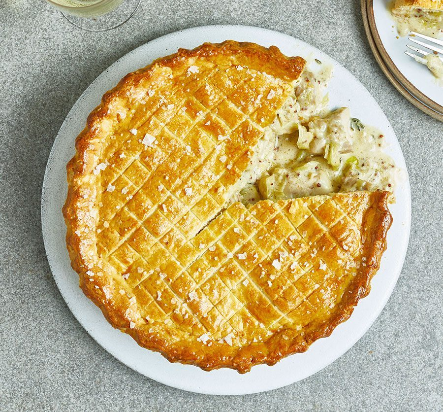

Chicken and Leek Pie
An easy one-pan chicken and leek filling under a homemade crust, baked in a cake tin so it turns out whole and cuts into neat wedges.

Before you start needs at least 3hr chilling — 2hr for the filling and 1hr for the pastry.
Ingredients
For the filling
For the pastry
Method
- Melt the 50g butter in a casserole dish over a low heat. Add the 1 leek, the 8 chicken thighs, the 1 thyme sprig, the 2 bay leaves and seasoning, and cook for 10-12 minutes until the chicken is cooked, the leek has softened and the mixture is simmering.
- Stir in the 2 tbsp plain flour and cook for 3 minutes, until the mix resembles a sandy paste.
- Pour in the 100ml white wine and bubble for 1 minute, then stir in the 300ml chicken stock, the 100ml crème fraîche and the 1 tbsp wholegrain mustard. Bring to a simmer and cook for 10 minutes until the chicken is cooked through.
- Season to taste, take off the heat and leave to cool completely. Tip into a container and chill for 2hr, or overnight.
- Rub the 150g cold butter into the 400g self-raising flour with a large pinch of salt until completely combined.
- Add half the 1 beaten egg and 4 tbsp ice-cold water and bring together into a dough with your hands, adding a little more water if needed. Knead for a minute so it comes together properly, then chill for 1hr.
- Butter a 20cm loose-bottomed cake tin. Roll two-thirds of the pastry out until large enough to line the tin with some overhanging, and use it to line the tin.
- Spoon in the filling, then roll out the remaining pastry until large enough to cover the pie.
- Brush the edge of the pastry with a little of the remaining beaten egg, then drape the lid over the pie to close it. Trim the edge and press with a fork to seal. Chill until you are ready to cook.
- Heat the oven to 200°C fan with a baking sheet inside. Brush the pie with some of the remaining beaten egg, then lightly score a criss-cross pattern on top with a sharp knife.
- Bake on the hot sheet for 20 minutes, then brush with the rest of the egg, season with flaky sea salt and bake for 15-20 minutes more, until deep golden.
- Rest for 10 minutes, then carefully remove from the tin, put on a board and cut into wedges.
Notes
- To skip making the pastry, buy a 500g block of shortcrust — all-butter if there is a choice, since butter is what the homemade version uses. Rolled to about 3mm it will line the 20cm tin and top the pie. Buy a block rather than ready-rolled sheets: a 320g sheet is too small and the wrong shape to line a tin this deep, and puff will not hold a wet filling or survive being turned out.
- Shop-bought pastry drops the 1hr chill at step 6, but not the filling's 2hr at step 4. You still need the beaten egg to glaze and a little butter for the tin, so only the flour and the 150g cold butter come off the shopping list.
- A good one to make ahead: prepare the filling a day in advance, or assemble the whole pie and chill it until you are ready to bake. The filling keeps chilled for up to two days, the assembled pie for 24hr. Brush with egg wash just before it goes into the oven.
- Let the filling cool completely before topping it with pastry. It keeps the pastry crisp and stops it going soggy as the pie bakes.
- For extra flavour, stir sautéed mushrooms or a handful of tarragon into the filling.
- Reheat leftovers in the oven rather than the microwave, so the pastry stays crisp.
Source: https://www.bbcgoodfood.com/recipes/next-level-chicken-pie